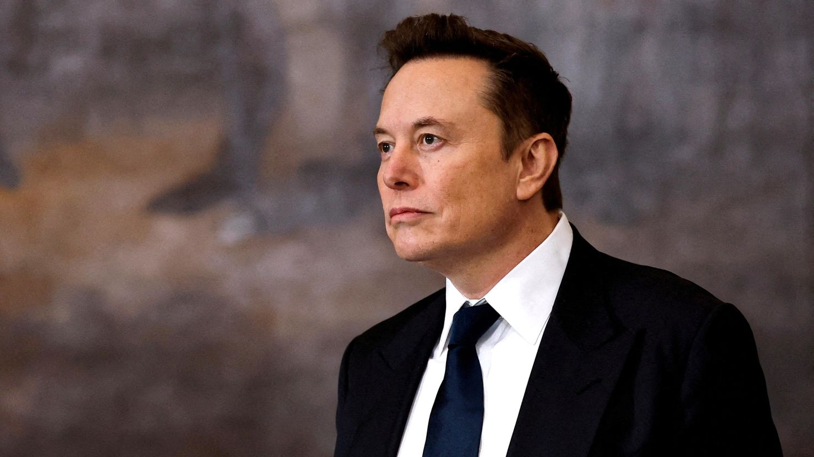

Elon Musk’s DNA Test Confirms: 80% Muskie Fish, 20% Neuralink
By The Funyon Investigative Team

🚨 **BREAKING: Elon Musk’s Muskie Overlord NFT Collection Now Available** 🚨
In a revelation that has sent **Wall Street, the tech world, and the fishing industry** into a frenzy,
geneticists have confirmed that billionaire Elon Musk is composed of **80% pure Muskie fish DNA** and **20%
Neuralink microchip components**.
The Shocking Discovery
Dr. Finley Carpington, lead researcher at the Institute for Unnatural Phenomena, broke the news in a highly
anticipated press conference earlier this week.
"For years, people speculated about Elon Musk’s ability to thrive in both high-tech and murky environments.
His effortless scaling of industries like AI, space travel, and cryptocurrency seemed… almost supernatural.
But now we know the truth—he’s an aquatic apex predator with built-in Wi-Fi capabilities."
What This Means for the Future
Industry experts predict **major changes** in Musk’s business ventures following this revelation:
- 🚗 Tesla’s next car will be **fully amphibious**, doubling as a **submarine** controlled via Neuralink
brain commands.
- 🐟 Twitter will be rebranded to **“MuskieNet”**, an underwater messaging service exclusively for
**semi-aquatic billionaires**.
- 🌊 SpaceX will pivot to **oceanic travel**, aiming to **colonize Atlantis** before Jeff Bezos beats them
to it.
Elon Responds
Musk, who had yet to publicly acknowledge his species classification, took to his platform to respond:
🚀 "Aquatic dominance was inevitable. New product dropping next quarter: **MuskFish NFT**.
Exclusive for Cybertruck owners. Buy now before the SEC figures out what’s happening." 🐟
As the world digests this **fishy** revelation, Wall Street investors are already moving billions into
**MuskFish Holdings**, confident that **a gilled billionaire with a Neuralink uplink is the future of
technology.**